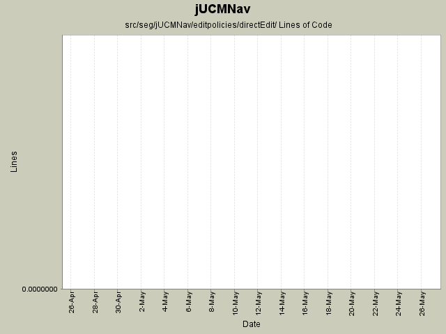

Summary Period: 2005-04-25 to 2005-05-27
[root]/src/seg/jUCMNav/editpolicies/directEdit

Total Lines Of Code:
0 (2006-03-31 18:01)
| Author | Changes | Lines of Code | Lines per Change |
|---|---|---|---|
| Totals | 8 (100.0%) | 0 (-) | 0.0 |
| jmcmanus | 1 (12.5%) | 0 (-) | 0.0 |
| jkealey | 6 (75.0%) | 0 (-) | 0.0 |
| etremblay | 1 (12.5%) | 0 (-) | 0.0 |
attempt to fix naming conflicts between directEdit and directedit.
0 lines of code changed in:
surprise feature of the day: direct edit on labels.
added code to AddAndForkAction to allow to add it on node connections.
fixed bug where delete path node's label didn't refresh screen.
0 lines of code changed in:
Labels now appear at correct place (maybe not for ComponentLabels).
Fixed a bug where LabelSetConstraintCommand did not implement JUCMNavCommand.
Implemented the command tests for labels.
Removed editpolicies.directedit and ChangeLabelNameCommand (these where committed accidently by me).
0 lines of code changed in:
Refactored a lot of packages to better reflect our strategy for the future.
Corrected some bugs to follow some guidelines we defined earlier.
Extracted the RessourceTracker class from UCMEditor.
0 lines of code changed in:
Generated by StatCVS 0.2.4